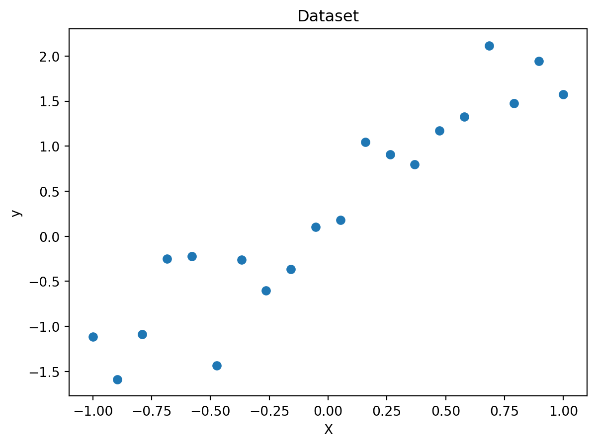

import numpy as np
import matplotlib.pyplot as plt
# Generate the dataset
np.random.seed(0)
X = np.linspace(-1, 1, 20)
y = 2 * X + np.random.normal(0, 0.5, 20)Overfitting
Overfitting occurs when a machine learning model performs very well on the training data, but fails to generalize well on unseen data. It happens when the model captures noise and random fluctuations in the training data instead of the underlying pattern or relationship.
One way to understand overfitting is to consider fitting a polynomial to data points. The degree of the polynomial determines its complexity. A higher degree polynomial can fit the training data more closely, but it may also capture random noise, resulting in poor performance on new data.
To demonstrate overfitting using polynomials, we will generate a dataset with some noise and fit polynomials of different degrees to it. We will then visualize the models to see how they fit the data.
Let’s start by importing the necessary libraries and generating the dataset. We will use the numpy library for array operations and random number generation, and the matplotlib library for data visualization.
In the above code, we first import the required libraries: numpy and matplotlib.pyplot. We then set a random seed to ensure reproducibility.
Next, we create an array X with 20 equally spaced points between -1 and 1 using the linspace function. We add some noise to the array y using the numpy.random.normal function. Here, we use a linear relationship with some Gaussian noise to generate our dataset.
Now, we will plot the generated dataset to visualize it.
plt.scatter(X, y)
plt.xlabel('X')
plt.ylabel('y')
plt.title('Dataset')
plt.show()
The code above uses the scatter function from matplotlib.pyplot to create a scatter plot of the dataset. It also adds labels to the x and y axes and sets a title for the plot. Finally, the show function is called to display the plot.
Now, let’s fit polynomials of different degrees to the dataset and see how they fit the data.
# Polynomial fitting and visualization
degrees = [1, 3, 9, 12]
plt.scatter(X, y)
for degree in degrees:
# Fit polynomial of given degree
coeffs = np.polyfit(X, y, degree)
poly = np.poly1d(coeffs)
# Generate x values for plotting
x_plot = np.linspace(-1, 1, 100)
# Compute predicted y values
y_plot = poly(x_plot)
# Plot the polynomial
plt.plot(x_plot, y_plot, label=f'Degree {degree}')
plt.xlabel('X')
plt.ylabel('y')
plt.title('Fitting Polynomials')
plt.legend()
plt.show()In the above code, we define a list degrees with the degrees of the polynomials that we want to fit to the dataset. We then iterate over each degree and perform the following steps: - Fit a polynomial of the given degree to the dataset using the polyfit function from numpy. - Create a polynomial object using the computed coefficients using the poly1d function from numpy. - Generate a set of x values for plotting using the linspace function from numpy. - Compute the predicted y values for the generated x values using the polynomial. - Plot the polynomial curve using the plot function from matplotlib.pyplot with a label indicating the degree of the polynomial.
Finally, we add labels and a title to the plot, and display a legend to distinguish the different polynomial curves.
When you run the code, you will see a plot showing the dataset points as scatter points, and different polynomial curves fitted to the data. From this visualization, you can observe the effect of overfitting as the degree of the polynomial increases. Higher degree polynomials tend to fit the training data more closely, but they also capture random noise and fluctuations, resulting in poor generalization to new data.